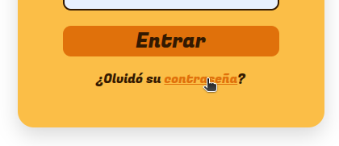
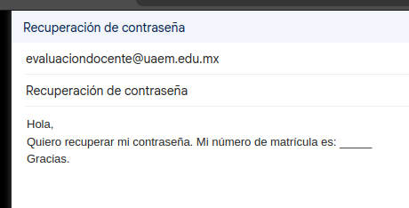

En el formulario que debe rellenar para iniciar sesión hay una pregunta "¿Olvidó su contraseña?"

Al hacer click en "contraseña" se le redirigirá para el envío de un correo al Administrador solicitando un cambio de contraseña, solo debe indicar su martícula en el cuerpo del correo, se verá como:
